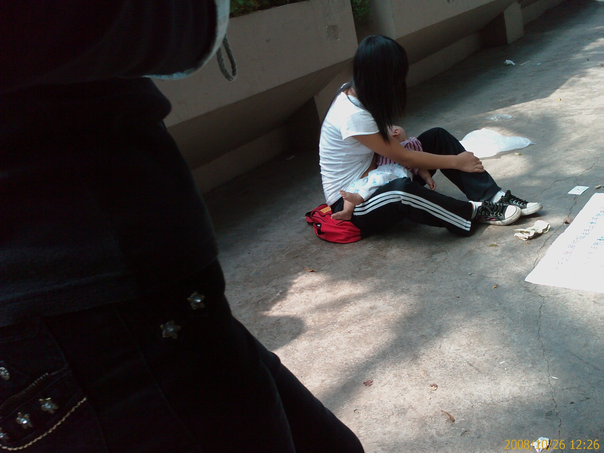
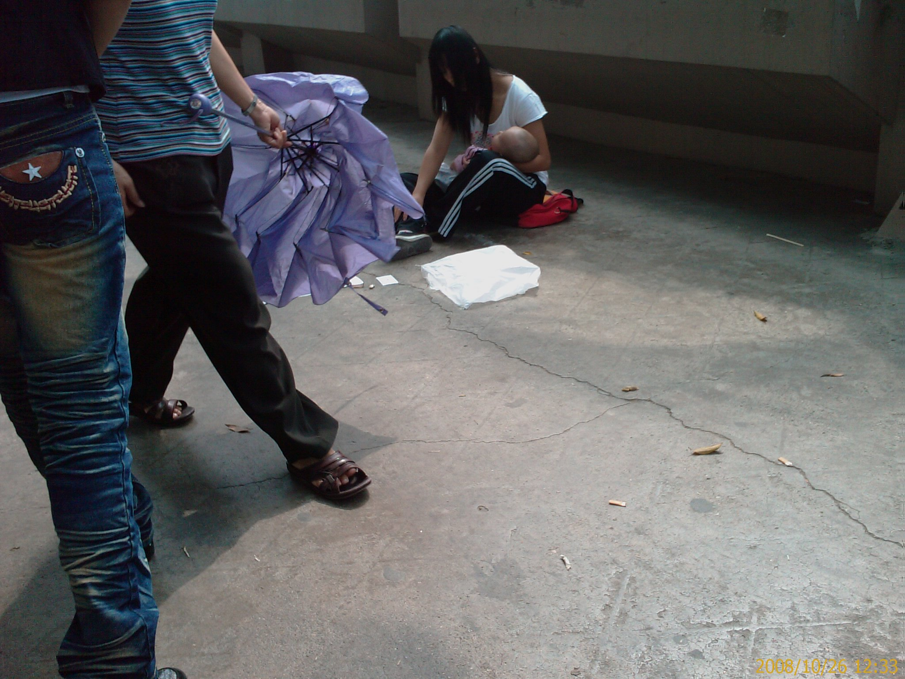
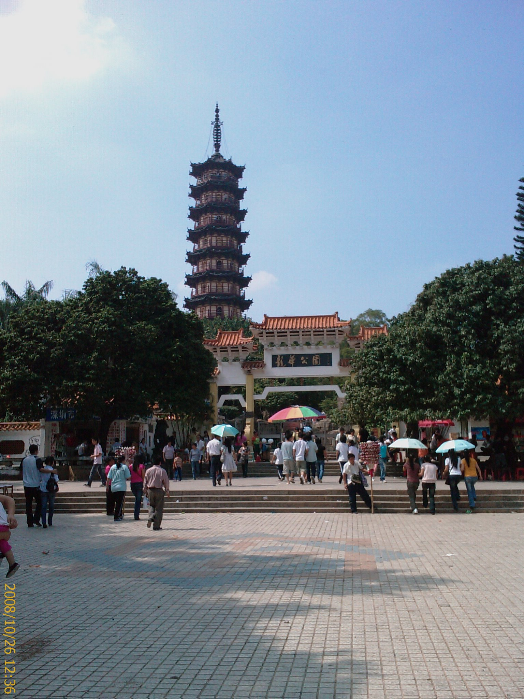
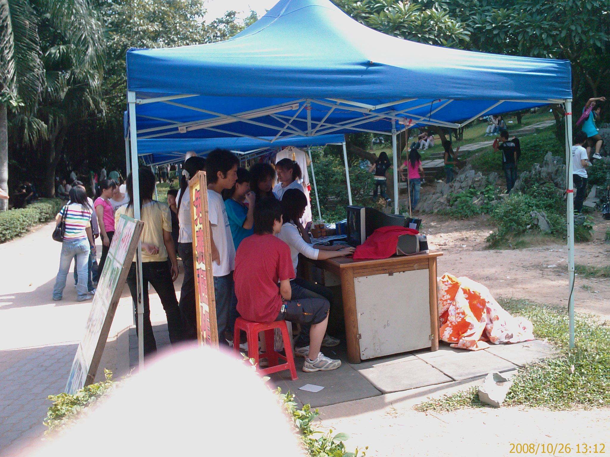
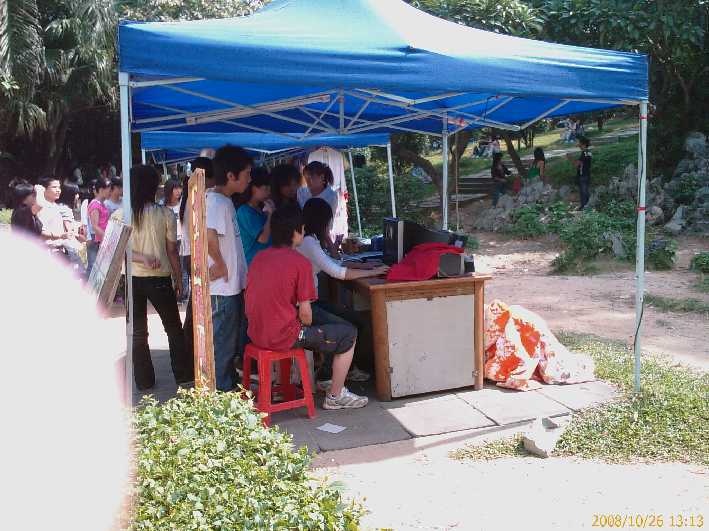
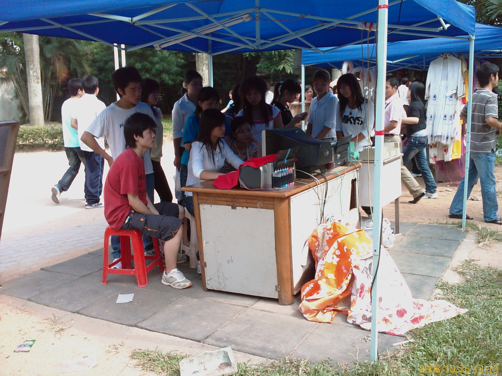
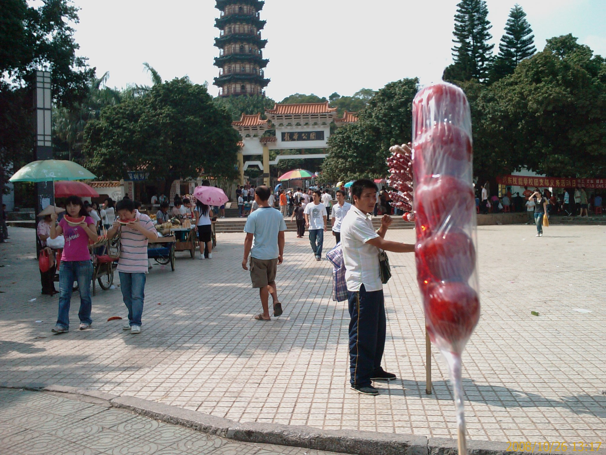
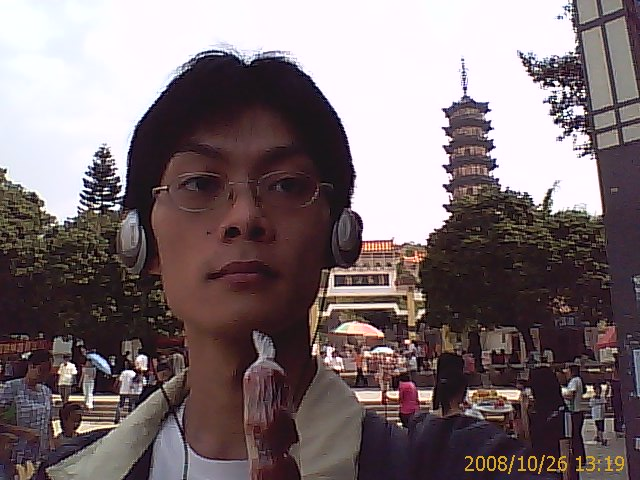
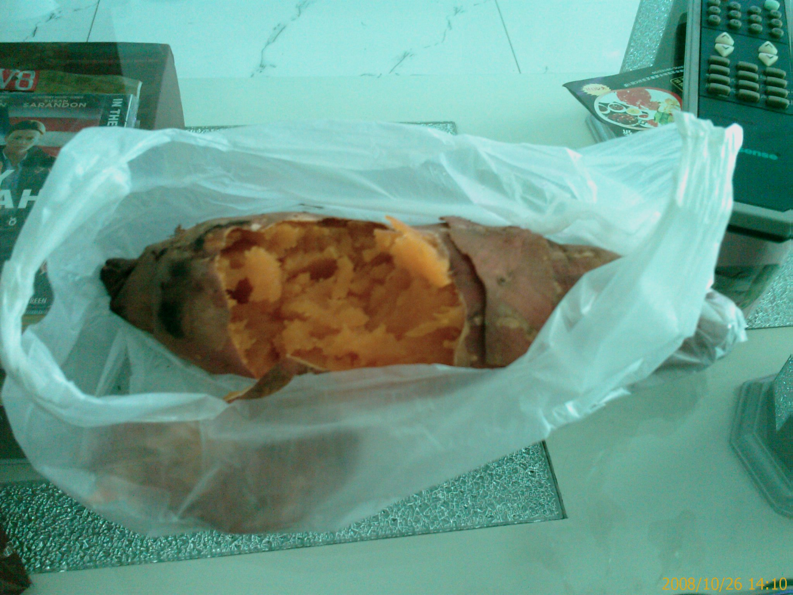

中午覓食記
26/Oct 2008
到了該吃午餐的時間了
就到附近逛逛
順便找吃的
路上看到一個長的還可以的年輕少婦
坐在地上哺乳
(這裡是中國嗎??民風真…Orz)
前面還放了一長白底黑字的紙
大意是她的錢包手機之類的東西掉了
沒辦法回家
當然我看不出這件事情的真實性
不過看起來好像煞有其事
(因為長相的關係??)
可惜我臉皮太薄
只敢偷拍幾張
所以角度都不太好
而且沒有拍到臉…XD
(不過這樣也好，保護當事人…)

這張有拍到她的衣服有拉起來的樣子

這張有看到一點點的臉….
又到了龍華公園
之前都是晚上來的
這次白天來就拍個照

這個叫龍X塔的(名字看過就忘了…Orz)
本來想上去看一下的
不過還要門票 5 塊錢
所以就在外面拍拍就好了
公園某入口處有人在幫人拍照並用印表機印出照片
看那個小妞用 photoshop 還蠻熟練的樣子
(靠這個吃飯想不熟練都不行吧…XD)


我的手指真礙眼…@_@

長的還不錯
其實龍華這邊正妹還蠻多的
害我走路都不專心…XD
逛了一圈看到好多人在賣糖葫蘆
想說很久都沒吃了
(上一次吃的印象是國小…)
就買了一隻來吃看看
雖然只要一塊錢….
結果….不好吃….


自拍鏡頭的解析度還真糟糕…@_@
回去之前看到控蕃薯
聽同事說這邊的控蕃薯好像還蠻好吃的
就買了一個回去吃看看
結果感覺還好
應該還可以更好吃的

這麼大一個只要 2 塊 5 角